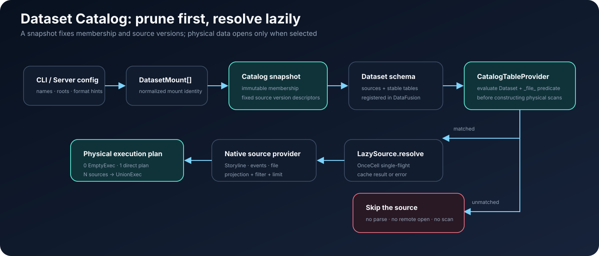

pChronicle Snapshot design¶
Current implementation notes. Code and historical docs call this the Dataset Catalog. The product name is Snapshot: the write/read sync protocol after a path is opened. Platform name-to-path authorization is RFC-0013 path Directory, not this page.
Dataset command arguments are in the
pchroniclecommand reference. The user model is Dataset, Source, and Snapshot. The query workflow is Discover and query. Physical trajectory formats are pChronicle run storage and Storyline three-table Lance.
Format wire contracts and field-by-field conversions follow RFC-0001 § Wire schema, RFC-0004 § ACTF mapping, RFC-0008 § ATIF mapping, and RFC-0009 § OpenAI Messages mapping.
1. Role¶
Snapshot addresses a query space composed of multiple storage locations and trajectory formats under one path. A Warehouse can pin several paths at once; each path remains an independent Dataset. The main cases are:
- querying live data, historical archives, and evaluation data together;
- one path that contains nested directories, several Run-level
events.lancestores, and peripheral JSON files; - the same
run_id,session_id, or filename appearing on different paths; - a Web service that must reuse one discovery result across requests and switch views only after an explicit refresh.
It sits between a path and DataFusion SQL. The user opens a path (or receives one after a Directory ticket). pChronicle recursively discovers trajectory sources, projects the different physical formats onto stable tables, and pins members and versions for one query or one generation of Web Snapshot. This is a write/read sync protocol, not a metadata database that must be maintained over time.
Snapshot is not Directory. It does not copy source data, take over
object-store directories, declare that peripheral JSON has become canonical,
or require a background sync job. The code type name
DatasetCatalogSnapshot still refers to this object.
2. Goals and non-goals¶
2.1 Goals¶
- Multi-Dataset joins: one SQL statement can reach several named local directories or object-store prefixes.
- Hierarchical discovery: a Dataset URI can point at a storage root, a Run root, a composite store, or a single file.
- Unified table model: Storyline, canonical events, ATIF, OpenAI messages, and ACTF use the same query table names.
- Stable identity: any Storyline can be located to a physical source
inside the Snapshot with
(dataset, _file_, session_id). - Snapshot consistency: a query never mixes newly discovered files or a new Lance generation into an in-flight execution.
- Stable default entry: a positional argument is always mounted as
the default Dataset named
dataset. - Bounded failure: discovery, format detection, per-file size, parse concurrency, and query memory all have explicit limits and error policies.
- Safe writes: named mounts are read-only by default. Server-side writes can land only on an explicitly chosen canonical events Dataset.
- Catalog-aware pruning: Dataset and
_file_predicates select sources first; the physical scan plan is built after that. - Lazy resolution: a Catalog Snapshot pins only member and version descriptions. Lance datasets, remote objects, and file datasources open when a query actually needs them, and are single-flight reused inside the Snapshot.
2.2 Non-goals¶
- No persistent catalog service in the style of Hive Metastore or Glue Catalog.
- No cross-file index, statistics warehouse, or materialized view inside the Catalog.
- No automatic merge of the same
run_idorsession_idfrom different sources. - No distributed transaction or global point-in-time read across independent physical sources.
- No Catalog-driven rewrite, move, or conversion of peripheral JSON. Long-lived columnar analysis still requires an explicit Lance import.
- No secret management in URI parameters. Object-store authentication continues to use each SDK's standard credential chain.
3. Core model¶

The core objects have seven layers:
| Object | Role | Lifetime |
|---|---|---|
DatasetMount |
holds hierarchical namespace, SQL alias, root URI, and optional format hint | configuration |
CatalogDataset |
one Dataset and its DiscoveredSource list |
Snapshot |
DiscoveredSource |
logical path, format, version, and status of a composite store or peripheral file | Snapshot |
DatasetCatalogSnapshot |
pins members, source versions, and temporary object files for every mount | one CLI query or one Server Catalog generation |
LazySource |
holds the pinned source description and caches the first resolve result or error, concurrency-safe | same as the Snapshot |
CatalogTableProvider |
prunes sources at the DataFusion scan boundary and composes the matching physical plans |
each Dataset stable table |
ChronicleQueryEngine |
registers the Snapshot as a DataFusion schema and runs read-only SQL | same as the Snapshot |
3.1 Namespace, Dataset, and SQL alias¶
Dataset identity is a normalized path. It is not a physical Lance dataset
and not a Warehouse mount name. One path can contain several Storyline
stores, several events.lance stores, and several peripheral files. The
Warehouse registers an opened path as a DataFusion schema through a SQL
alias, so prod and staging can exist at the same time. The alias is
not Dataset identity. The implementation still uses NamespacePath for
mount hierarchy.
A SQL alias is trimmed and lowercased and must match
[A-Za-z_][A-Za-z0-9_]*. public and information_schema are reserved.
A namespace component may contain letters, digits, _, -, and .. A
duplicate full namespace or SQL alias fails before discovery.
3.2 Source and _file_¶
A Source is the Catalog's smallest discovery unit:
- a Storyline
CURRENTroot is astoresource; - a canonical
events.lanceroot is astoresource; - each JSON, JSONL, or NDJSON file is a
filesource.
_file_ is the source's UTF-8 logical path relative to the Dataset root,
always separated by /. When the mount root itself is the source, the
value is .. It is not a persistent column of the source table and is
never written back to Lance.
3.3 Storyline and Run identity¶
session_id is the logical primary key of a Storyline, but uniqueness is
guaranteed only inside one source. The same value can appear in a
peripheral file or another archive. Catalog and Server therefore use this
composite key:
run_id is a Run grouping key. One physical Run can contain a main
Storyline and several subagent Storylines, so many rows in the same source
can share one run_id. Canonical-event normalization groups by the
event's Storyline/session identity and keeps the actual events.lance
URI, so later reads and writes do not guess a physical location from the
mount root.
3.4 Source revision¶
Internally, CatalogSourceRevision stores a typed revision. A single
string is not asked to represent a Storyline generation, an event
fact/layout watermark, a local file fingerprint, and an object version at
once. sources.snapshot_ref remains a string projection that is convenient
for SQL display and filtering. Consistency checks, Snapshot summaries, and
API descriptions use the typed revision.
One canonical events source can be linked to several derived Storyline
projections. The Catalog does not hide or reject the canonical source
because of that. It selects one read-acceleration projection in the stable
order fresh → last_modified → generation → path.
projection_candidates exposes the candidate count. When no candidate is
fresh, the query falls back to the pinned canonical events Snapshot.
4. Mounts and the default Dataset¶
4.1 CLI form¶
--mount NAME=DATASET may be repeated:
pchronicle query \
--mount current=local:///srv/pchronicle/current \
--mount archive=s3://trajectory-bucket/archive \
--sql "SELECT * FROM current.runs"
--mount and a positional Dataset are mutually exclusive. A positional
argument is mounted as the fixed schema dataset. With only --mount,
the caller must write the mount name; there is no implicit dataset
schema. The user config file (-c) stores aliases and a default Dataset
only. It does not provide a query mount table.
pchronicle query --mount current=local:///srv/pchronicle/current \
--mount archive=s3://trajectory-bucket/archive \
--sql "SELECT table_schema, table_name FROM information_schema.tables"
4.2 Default selection¶
| CLI input | Default Dataset | Unqualified names such as runs |
|---|---|---|
positional INPUT |
fixed as dataset |
resolve to dataset.runs and the other default views |
--mount only (one or more) |
none | must use a qualified name such as current.runs |
Positional form:
This is equivalent to mounting ./capture as dataset and querying
dataset.runs. Cross-Dataset joins use repeated --mount. Do not put a
positional Dataset and --mount on the same command.
5. Hierarchical discovery¶
5.1 Example¶
Assume this mounted directory:
capture-root/
├── live/
│ └── CURRENT
├── agents/
│ └── codex/
│ └── run-001/
│ └── events.lance/
│ └── _manifest.json
└── imports/
├── batch-a.atif.jsonl
└── nested/
└── session.json
The Catalog produces four sources:
_file_ |
kind |
Possible format |
|---|---|---|
live |
store |
storyline |
agents/codex/run-001/events.lance |
store |
events |
imports/batch-a.atif.jsonl |
file |
atif |
imports/nested/session.json |
file |
detected from the file |
Internal files of live and events.lance do not become sources again.
Stopping descent after a composite root is recognized keeps manifests,
generations, segments, and objects.lance from being treated as user
input.
5.2 Local discovery¶
Local URIs accept ordinary paths, local://, and file://:
- If the root is a
.json,.jsonl, or.ndjsonfile, create a single source. - If the root directory contains
CURRENT, the whole root is one Storyline source. - If the root is named
events.lanceand contains_manifest.json, the whole root is one events source. - Otherwise recurse in stable path order: recognize composite roots, or collect supported peripheral files.
- Symbolic links are not followed, which avoids cycles, out-of-tree reads, and duplicate identities for the same physical file.
5.3 Object-store discovery¶
Object URIs are resolved through the Lance/object-store adapter. The
Catalog consumes a prefix listing as a stream and fails before it reads
max_entries + 1 objects. It does not collect an unbounded listing into
memory and check afterwards. Then:
- recognize Storyline roots from a
CURRENTobject; - recognize canonical events roots from
events.lance/_manifest.json; - exclude every object inside a composite root;
- treat remaining
.json,.jsonl, and.ndjsonobjects as independent sources; - sort by Dataset-relative object key.
Current object backends reuse the URI schemes that pChronicle/Lance
already support, such as s3://, az://, and gs://. A failed mount or
listing means a trusted member set cannot be built, so even report mode
fails.
5.4 Format detection¶
Each peripheral file is detected independently, so one Dataset can mix
ATIF, OpenAI messages, and ACTF. pchronicle query does not impose a
format constraint on the Dataset. --source on find and export only
narrows the search to one Dataset-relative Source path; it is not a
format hint.
Neither local nor remote peripheral files are read at Catalog-build time
for autodetection. Without an explicit format hint, sources.format may
be NULL. The Catalog first freezes the local file fingerprint or remote
object version, then runs bounded format detection after _file_ pruning
selects that source. The detection result is cached on the Snapshot's
LazySource together with the datasource resolve result.
6. SQL provider¶
The Dataset's stable public relations, exact sources columns,
Source-local identity, and join rules belong to the
Query Model Reference. This section only
explains how the Catalog builds execution plans for those relations.
Peripheral files do not synthesize fake raw event rows. They are queried
only through Storyline-normalized relations. The Catalog adds a constant
_file_ to entity relations so the public Source identity connects to the
lazy physical Source.
6.1 Catalog-aware source pruning¶
runs, steps, tool_calls, and events are each provided by a
Dataset-level CatalogTableProvider. After DataFusion hands projection,
filters, and limit to the provider, the provider builds the physical plan
in this order:
- drop sources that cannot provide the target table — for example
eventsautomatically excludes Storyline and peripheral files; - evaluate recognizable filter expressions against each source's constant
_file_; - skip sources that cannot match, without calling
LazySource::resolve; - resolve candidates in stable source order, capped by
max_concurrent_sources, and pass business-column projection, business predicates, and limit on to each native provider; - zero hits produce
EmptyExec; one hit uses that plan directly; several hits produceUnionExec; a global limit is applied last when needed.
_file_ predicates that can prune exactly include =, !=, IN,
NOT IN, case-sensitive LIKE/NOT LIKE, and combinations of AND,
OR, and NOT that can be evaluated safely. Expressions that mix source
conditions with business conditions use conservative three-valued logic:
a source is skipped only when it can be proved impossible to match. For
example:
SELECT run_id, session_id
FROM archive.runs
WHERE _file_ LIKE '2026/08/%'
AND session_id = 'session-42';
Here LIKE prunes sources at the Catalog layer. session_id is pushed
into the Lance or file provider of each hit. Without a _file_
predicate, the Catalog has no cross-source run_id or time statistics, so
every compatible source of the target table is a candidate. Business
predicates can still be pushed down inside each native provider.
LazySource caches the resolve result in an async OnceCell. Concurrent
queries that hit the same source open, remotely materialize, or parse the
format only once. Resolve-phase failures are cached too, so behavior is
stable inside one Snapshot. The raw events table of canonical events
can scan pinned segments directly. Without a fresh projection, a query
with a provable session_id = ... or session_id IN (...) reads only
the full history of the target Storyline. Wide queries read the pinned
snapshot. Both fallbacks are bounded by max_event_fallback_rows and
max_event_fallback_bytes, and they materialize only the relation tables
the current query asked for. Over-budget cases require a build/sync of
the Storyline projection.
load_events point lookups read the target session directly and do not
build a DataFusion MemTable, but they use the same row and byte budgets.
EXPLAIN can inspect the pruned physical plan. An exact single-source
hit should not contain UnionExec.
6.2 Join rules¶
One Dataset can contain several physical sources, and run_id/session_id
are valid only inside a single source. When two built-in trajectory tables
join across several same-Dataset sources, an explicit _file_ equality
is required:
SELECT r.run_id, s.step_id, s.message_kind, s.message_value
FROM archive.runs r
JOIN archive.steps s
ON r._file_ = s._file_
AND r.session_id = s.session_id;
Omitting _file_ is rejected before execution. Cross-Dataset joins do
not require matching _file_ values, because the left and right
namespaces are already different and usually do not share a directory
layout:
SELECT c.run_id, a.run_id AS archived_run
FROM current.runs c
JOIN archive.runs a ON c.session_id = a.session_id;
The check applies to built-in joins of runs, steps, and tool_calls.
The query engine accepts a single read-only SELECT, VALUES,
DESCRIBE, or EXPLAIN. It rejects DDL, DML, COPY, and multi-statement
SQL.
7. Snapshots and consistency¶
7.1 Build process¶
One Catalog build completes in this order:
parse and validate mounts
→ freeze candidate members of each root
→ pin identity / CURRENT / manifest / object metadata of each candidate
→ build sources metadata
→ compute snapshot_id
→ register Dataset schema, CatalogTableProvider, and default views
→ publish to query or Server
Only a fully successful DatasetCatalogSnapshot is handed to the query
engine. The build does not open Lance datasets, copy remote JSON locally,
or normalize canonical events into Storyline three-table form.
7.2 How each source is pinned¶
| Source | Member pin | Content/version pin |
|---|---|---|
| local peripheral file | freeze the path list at discovery | record path, size, mtime, and device/inode on Unix; re-check before and after the first read |
| remote peripheral object | freeze listing ObjectMeta |
after a hit, read with the pinned version/ETag, stream-copy into the Snapshot temp directory, and verify the final size |
| Storyline store | discover and read the CURRENT description |
freeze the generation and the exact versions of the three tables; open the Lance dataset only after a hit |
| canonical events | discover and read _manifest.json |
freeze the manifest revision and visible segment versions; open segments only after a hit |
Only remote objects selected by a query are copied. Copies write chunks into a temporary file held by the Snapshot; the whole object is never read into memory at once. The temporary directory is removed when the Snapshot is dropped. A local fingerprint is change detection, not a content hash: an attacker who rewrites a file in place while keeping the same identity, size, and mtime is outside the guarantee.
7.3 Consistency bounds¶
A Snapshot guarantees:
- query planning and execution see the same source member set;
- even a late-opened Storyline/events store can open only the generation, manifest, and segment versions already pinned by the Snapshot — it does not re-read the latest pointers;
- when the backend provides a version or ETag, a remote peripheral object is pinned to the version observed at listing time;
- new files, generations, or manifests become visible only on the next CLI query or an explicit refresh.
A Snapshot does not claim that several independent URIs come from one
global transaction instant, and it cannot stop a source system from
deleting data that was pinned but not yet read. If a local file changes
detectably between discovery and first read, the query fails rather than
mixing versions. If an object backend provides neither version nor ETag,
the Catalog can only describe snapshot_ref with key, size, and mtime
and verify transfer size. That is a weaker object-version pin.
snapshot_id is a truncated BLAKE3 digest of Dataset names, URIs, format
hints, source-relative paths, pinned references, and candidate errors. It
identifies a member/version view. It is not a content checksum and not a
business commit ID.
7.4 Resolve lifetime¶
Each ready source in the Snapshot holds a pinned description and a resolve cell. On first hit:
CatalogTableProvider source pruning
→ LazySource::resolve
→ open the pinned Lance version, or verify/materialize the pinned file
→ create the native TableProvider
→ cache Result<ResolvedSource>
Laziness therefore does not change the Snapshot boundary: resolve happens late, but the resolve target was pinned before the Catalog was published. A source that no query hits can stay unopened for the whole Snapshot lifetime.
8. Error policy and resource bounds¶
ls and status expose two strategies through --errors:
| Strategy | One candidate cannot pin a description or pass initial validation | Dataset root missing, listing/walk failed, or a global limit exceeded |
|---|---|---|
strict |
Catalog build fails | Catalog build fails |
report |
write <dataset>.sources with status error and skip data-table registration |
Catalog build fails |
report is meant to tolerate a bad file inside a trusted member set. It
is not meant to disguise an incomplete listing as success. Candidate
errors strip the URI query string before they enter the public Catalog,
so a temporary signature is not reflected. Production configuration
should still keep credentials out of URIs. Lance open, remote conditional
read, format detection, or record-parse errors that appear only at SQL
scan time fail that query under both strict and report. They never
silently drop a ready source, and they never rewrite sources.status on
the immutable Snapshot after the fact.
The Catalog reuses the resource parameters of direct file query:
max_files: upper bound on candidate sources;max_entries: upper bound on directory entries or object listing items;max_detection_bytes: upper bound on format-detection input;max_file_bytes: upper bound on peripheral file/object size;- optional
max_record_bytes,max_concurrent_files, and cache parameters: resolve-time bounds. There is no default per-record size limit;max_file_byteslimits the source; max_concurrent_sources: how many sources one physical scan may resolve at once;max_event_fallback_rows,max_event_fallback_bytes: memory bound for one directed canonical→Storyline fallback when no fresh projection exists;- DataFusion memory pool, spill path, spill bytes, timeout, and output row count: query-time bounds.
9. Server, refresh, and Web¶
pchronicle serve mounts Datasets through one or more positional
[NAME=]DATASET arguments. Startup first converges canonical Storyline
projections, then builds the initial Catalog. Every later REST and SQL
request shares that Catalog.
| API | Semantics |
|---|---|
GET /api/catalog |
current snapshot_id, creation time, default Dataset, error policy, and source list |
POST /api/catalog |
build a complete new Snapshot off the lock, replace atomically on success, and clear the trajectory cache |
When the projection supervisor discovers a new canonical Store at
runtime, or a projection is published, it marks the Catalog dirty, then
rebuilds completely off the lock and switches atomically. Further
appends to an already discovered events.lance only advance the source
watermark; they do not trigger a global Catalog rebuild. A Gateway-backed
single-trace query first locates the source through the Catalog, then
reopens the latest canonical manifest, so an in-flight trace stays
visible while the Storyline projection waits for an idle window. A failed
refresh does not clear or partially update the old Catalog. It keeps the
dirty flag and retries within a bound. In-flight requests hold an Arc
to the old Snapshot and can finish.
Web Explorer takes the Dataset list from the Catalog. Server-side
filters, URL state, and Storyline lists all carry the full
(dataset, _file_, session_id). run_id is returned separately as
physical Run grouping. The Catalog is an immutable Snapshot.
POST /api/catalog can still refresh explicitly, but canonical updates
maintained by positional-Dataset serve produce a new Snapshot
automatically.
9.1 Server source-routing acceleration¶
The Server holds a rebuildable in-memory acceleration structure inside
each CatalogRuntime generation. It does not change the definitions of
DatasetCatalogSnapshot, CatalogDataset, or DiscoveredSource.
Indexes are derived on demand from the current Snapshot's stable tables:
- the
runsindex mapsrun_id,session_id,agent_id, andagent_model_nameto source ids as a multi-value map; eventsuses a two-level lazy index: the identity layer holdsevent_idandtrace_id; the partition layer holdssession_idandagent_id. Project lists do not pay memory cost for high-cardinality event identities;- source paths are stored once per Dataset. Value keys use a per-generation keyed 64-bit fingerprint. A single-source hit inlines the integer source id. A hash collision only widens the candidate set; the original SQL predicates still do the final filter;
- Run lists are cached lazily on a separate path so SQL point queries do
not pay for Explorer
row_countaggregation.
An index is built only when the first single-table query with a routable
predicate arrives. Async single-flight prevents concurrent duplicate
scans. Construction uses an Arrow batch stream and does not collect the
full result. One index layer accepts at most 1,000,000 rows and
1,000,000 distinct values. Crossing that bound discards the unpublished
temporary index and falls back to the original query. The Server extracts
only string equalities or IN predicates that must hold from the top-level
AND. Joins, CTEs, disjunctions, complex expressions, an existing
_file_ predicate, too many candidate sources, or an index-build failure
all keep the original SQL. On a hit, the Server only adds _file_ = ...
or _file_ IN (...); DataFusion still evaluates the original business
predicates. The index can only shrink physical source candidates. It
cannot change result semantics.
The acceleration field of GET /api/catalog reports whether indexes
are built and their row, source, and distinct-value counts. failed
lists build failures already cached for this generation so later requests
do not rescan the whole table. POST /api/query/evidence reports
applied, already_pruned, not_applicable, not_selective, or
index_unavailable in the source_routing response field. A Catalog
refresh publishes the new Snapshot, query engine, and empty acceleration
structure as one runtime. Old requests keep the old runtime. Indexes are
not reused across snapshot_id values.
The first index build still scans the corresponding stable table. The main gain is later point/project queries in the same Server lifetime. One-shot CLI SQL does not use this state and does not turn the Catalog into a persistent metadata service.
9.2 Write boundary¶
pchronicle serve exposes reads, Catalog refresh, and bounded evidence
query only. It does not expose maintenance, import, or arbitrary SQL
writes. The service is forced to loopback. Gateway and native writers
write the Dataset directly and do not go through the Warehouse API.
10. Rust API boundary¶
The core API is provided by persisting-pchronicle:
use std::sync::Arc;
use persisting_pchronicle::{
CatalogSnapshotOptions, ChronicleQueryEngine, DatasetCatalogSnapshot, DatasetMount,
};
let mounts = vec![
DatasetMount::new("current", "local:///srv/pchronicle/current")?,
DatasetMount::new("archive", "s3://trajectory-bucket/archive")?,
];
let snapshot = Arc::new(
DatasetCatalogSnapshot::discover(mounts, None, CatalogSnapshotOptions::default()).await?,
);
let engine = ChronicleQueryEngine::from_catalog_snapshot(snapshot).await?;
let rows = engine
.query_jsonl("SELECT COUNT(*) AS runs FROM archive.runs")
.await?;
To read a complete trajectory by Storyline, call the Snapshot's
load_storyline, load_events, or canonical_event_uri with a
CatalogStorylineKey. The control plane can page through the same
Snapshot with list_namespaces, list_sources, and describe_source.
Page tokens are bound to snapshot_id and cannot be reused after a
refresh. Callers must not rediscover sources around the Snapshot; that
can splice different members or versions into one response.
11. Key invariants¶
Implementation and later extensions must keep these invariants:
- Namespace is hierarchical logical identity. A SQL alias is an independent, unique lowercase schema name. The two must not be mixed into one field.
_file_is stable inside one Snapshot and relative to the Dataset root. The root source is always..- A Catalog Storyline's full identity is always
(dataset, _file_, session_id).run_idis only for Run grouping. - After a composite store is recognized, its internal files must not be registered as independent sources.
- The six tables must exist even when empty, and they keep a fixed schema.
eventscan contain only canonical events. It must not be forged backwards from a lossy Storyline.- Trajectory-table joins across several sources in the same Dataset must
carry
_file_equality. - A query-time source cannot outlive the Snapshot that holds it.
- The Server publishes only a complete new Snapshot atomically. On failure it keeps serving the old Snapshot.
- The Warehouse Server must not treat any Dataset or source as a write target.
_file_source pruning must happen beforeLazySource::resolve. A source must not be opened just to decide whether it hits.- Late resolve may use only the version description pinned by the
Snapshot, and it must single-flight inside that Snapshot. It must
not re-follow
CURRENTor the latest manifest at resolve time. - When several projections attach to the same canonical events source, the canonical source must remain visible and at most one fresh projection is chosen stably. Conflicts can only become diagnostics; they must not block fact reads.
- The Server routing index must be published with the same Snapshot generation. Uncertain build or analysis can only fall back to the original query. An incomplete index must not exclude a source.
12. Trade-offs and alternatives¶
12.1 A persistent metadata service¶
A persistent Catalog can cache listings and statistics, but it introduces consistency protocols, migrations, background sync, authorization, and disaster recovery. The current workload needs a definite bound on "what this one query sees", so the design uses a query-time Snapshot. If listing cost becomes the main bottleneck later, a verifiable cache can be added without changing the SQL model.
12.2 Flattening every mount into public¶
Flattened tables cannot tell live data from archives, and _file_ would
have to encode a URI or Dataset name. DataFusion schemas keep the Dataset
semantics the user supplied and make cross-Dataset SQL explicitly
reviewable.
12.3 Using the directory basename as the default name¶
A basename depends on path spelling, object prefixes, and deployment
directories. Unqualified SQL would not get a stable resolution. The
positional entry therefore always uses the fixed name dataset instead
of guessing a name from the URI.
12.4 Importing everything to Lance at discovery¶
Automatic import of peripheral JSON would change query latency, capacity,
and failure semantics, and it would create new persistent state. The
Catalog therefore only virtualizes those files. Canonical events.lance
is the exception: positional-Dataset serve maintains a deterministic
sibling Storyline projection outside the Catalog. Queries still choose a
projection or a pinned-snapshot fallback by lineage and freshness.
12.5 Using only run_id¶
run_id is a grouping key, not the Storyline primary key. The main Agent
and subagents in one physical Run can share it. Locating by
(dataset, _file_, session_id) keeps the physical origin and supports
unambiguous read/write routing.
13. Tests and evolution¶
Current tests cover:
- Dataset name normalization, reserved names, and duplicate rejection;
- local mixed-format recursive discovery, default views, and empty Dataset schema;
strict/reportcandidate-error behavior;- source-resolve counts remaining zero after Catalog and query-engine construction;
_file_plus business predicates resolving only the hit local, remote, and Storyline sources;- single-source physical plans with no
UnionExec, and no download of unhit remote objects; - late errors not being silently skipped under
report; - raw canonical
eventsscans and session point lookups not triggering full Storyline normalization; - stable selection of one among several fresh projections, with canonical events always visible;
- hierarchical namespace paging, source describe, and cross-Snapshot page-token rejection;
- dangerous same-Dataset joins rejected and cross-Dataset joins allowed;
- independent reads of several Storylines in one canonical events source;
- CLI positional arguments, single/multi named mounts, TOML, and help text;
- Server lazy Catalog, Dataset filtering, failed refresh keeping the old Snapshot, and physical write coordinates;
- Server routing-index multi-predicate intersection, single-source SQL
injection, result equivalence, explicit
_file_preservation, and clear-on-refresh; - Web Dataset selection and full Run-coordinate encoding.
When a new format or backend is added later, define first how it produces
a stable _file_, how it pins versions, which tables it can project, and
whether writes are allowed, then attach a discoverer. A backend that
cannot pin members or versions must lower its consistency claim
explicitly. It must not reuse the existing snapshot_ref to imply a
stronger guarantee.
14. Related implementation¶
crates/persisting-pchronicle/src/store/catalog/: discovery, pinning, lazy sources, Catalog provider, source pruning, and Run routing;crates/persisting-pchronicle/src/store/query_engine.rs: Catalog DataFusion backend and join checks;crates/persisting-pchronicle/src/store/storyline/datafusion.rs: Storyline description pinning and late open of a pinned generation;crates/persisting-pchronicle/src/store/events/datafusion.rs: canonical event manifest pinning and late open of pinned segments;crates/persisting-pchronicle-cli/src/lib.rs: query CLI mounts and default Dataset resolution;crates/persisting-pchronicle-cli/src/server/mod.rs: lazy build, atomic refresh, and read/write routing;crates/persisting-pchronicle-cli/src/server/acceleration.rs: same-generation in-memory source-routing index, conservative SQL analysis, and_file_injection;pchronicle-web/src/: Dataset selection and full Run identity.